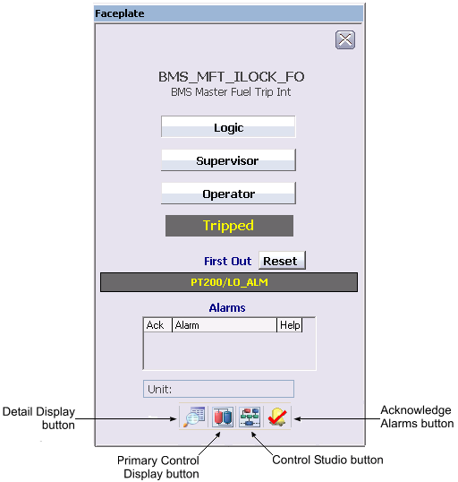

First-out alarm suppression module faceplate (ALM_FO_SUP_FP)

The following items are contained in the faceplate template:
Logic field - Indicates that logic is configured to arm or disarm the module under certain conditions.
Supervisor field - Indicates that the supervisor has privileges to arm or disarm the module.
Operator field - Indicates that the operator has privileges to arm or disarm the module.
State - Indicates the module state (Disabled, Normal [module is armed], or Tripped).
First Out - Indicates the first-out alarm.
Reset button - Resets all alarms to original configuration (alarms that were suppressed are unsuppressed).
Alarm indications This is a scrollable list of the current alarms that functions like the first two columns of an alarm summary. The first column shows the state of the alarm represented by one of the following symbols:
Active/unacked -- blank field
Active/acked -- checkmark
Inactive/unacked -- empty box
The second column is the alarm name or parameter. The text and colors are as configured for the alarm's current state.
Unit field - Displays the unit name.
Toolbar - Click the icons from left to right to perform the following functions, respectively:
Detail Display button: open the detail display for the module.
Primary Control Display button: open the primary control display.
Control Studio button: open the module in Control Studio.
Event Chronicle button: open the Process History Viewer.
Acknowledge Alarms button: acknowledge all alarms on this module.